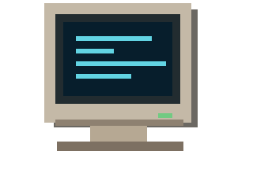

INSERT COIN
Únete al club
La retroinformática se disfruta más cuando se comparte.
Esta página muestra cómo podría funcionar el contacto con el club. Las condiciones de participación y el canal oficial están pendientes de validación.

PRESS START
¿Te animas a participar?
Si te interesan los videojuegos clásicos, reparar equipos antiguos o aprender sobre la historia de la informática, esta propuesta de contacto está pensada para ti.
- Explora las actividades y los equipos presentados.
- Elige el motivo de tu consulta.
- Cuando exista un canal oficial validado, podrás contactar con el club desde esta página.
Preguntas habituales
¿Necesito saber programar para interesarme por el club?
No necesariamente. La propuesta contempla actividades de iniciación y divulgación. Los requisitos oficiales, si los hubiera, deberán confirmarse.
¿Cómo sabré cuándo se celebran los encuentros?
Una vez publicada la programación validada, las fechas aparecerán en Actividades y en los canales oficiales que confirme el museo.
¿Qué ocurre al enviar este formulario?
En esta versión no ocurre ningún envío. Solo se comprueba que los campos sean válidos y aparece una confirmación de demostración.